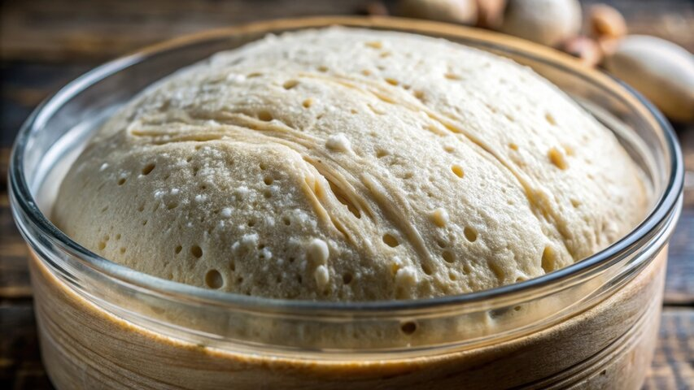
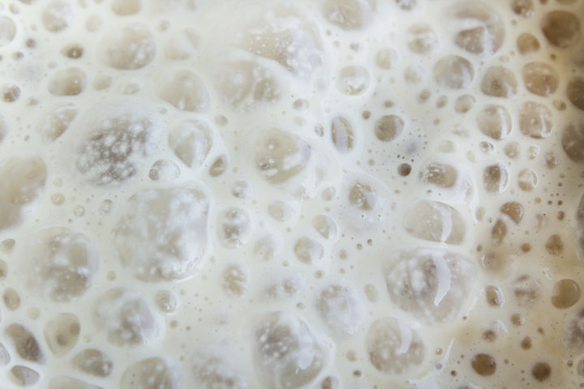

- Improved Digestibility The fermentation process breaks down gluten and phytic acid, making sourdough easier to digest and potentially more tolerable for individuals with mild gluten sensitivities.
- Enhanced Mineral Bioavailability Sourdough fermentation reduces antinutrients like phytic acid, which can inhibit mineral absorption. This boosts the bioavailability of key minerals like magnesium, zinc, and iron.
- Lower Glycemic Response Compared to conventional bread, sourdough has a lower glycemic index, helping to moderate blood sugar spikes and improve satiety after meals.
- Natural Preservation & Safety The organic acids and antimicrobial compounds produced during fermentation inhibit spoilage organisms and pathogens, contributing to food safety and longer shelf life.

Science
- Symbiotic Microbial Ecosystem Sourdough starters host a stable community of wild yeasts and lactic acid bacteria (LAB), which work together to ferment dough, enhance flavor, and improve texture.
- Production of Functional Metabolites LAB produce bioactive compounds like exopolysaccharides and bacteriocins, which can improve gut health and inhibit harmful microbes.
- Flavor Complexity Through Fermentation The metabolic activity of sourdough microbes generates a wide range of aromatic compounds—like esters, aldehydes, and organic acids—that give sourdough its signature tang and depth.
- Biotechnological Versatility These microbes are not just for bread—they are being explored for use in nutraceuticals, cosmetics, and even pharmaceuticals due to their functional properties and fermentation capabilities.

References
Minervini, F., De Angelis, M., & Gobbetti, M. (Eds.). (2023). Handbook of sourdough microbiota and fermentation: Food safety, health benefits and product development. CRC Press.